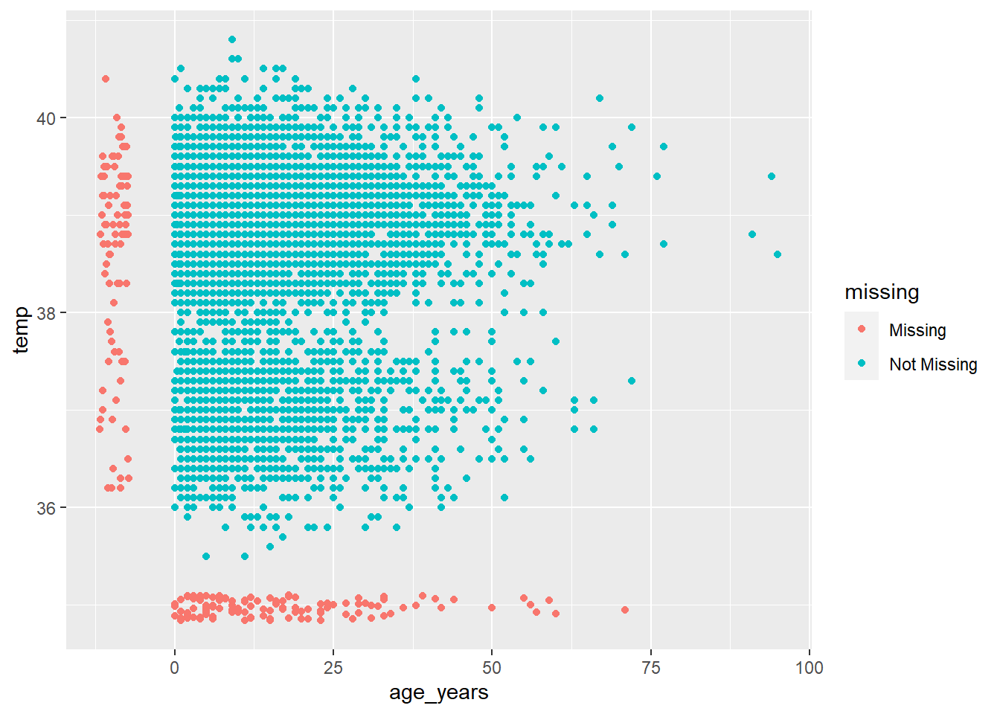

9 Factors
9.1 Overview
Under construction - TBD
In R, factors allow for ordered categorical data. A column can be converted from class numeric, categorical, or even logical to class factor. In this case, the values are stored as ordered integer levels, and can display with assigned labels.
In a column of class factor:
- the possible values are restricted - values not already defined as levels are rejected
- values are ordered, which impacts how they display in tables and plots
Most of this page will use functions from the package forcats (a short name for “For categorical variables”).
Factors are useful in statistical modeling, which allows integer values such as 1/0 to be evaluated categorically and not continuously.
9.2 Preparation
Load packages
Below are the packages used in this page
pacman::p_load(
rio, # import/export
here, # filepaths
lubridate, # working with dates
forcats, # factors
tidyverse # data mgmt and viz
)Load data
In this page we demonstrate using the linelist loaded below with import() (see page on Import and Export).
# fake import the linelist
linelist <- rio::import("linelist_cleaned.xlsx")9.3 Preparation
We begin in a common epidemiological scenario - the creation of a categorical column. In this case, we use the existing column time_admission (in format “HH:MM”) to classify hospital admissions into either morning, afternoon, evening, or night.
- The
time_admissionis converted to a time class withstrptime()from base R, and then thehouris extracted with the lubridate functionhour()
- The dplyr function
case_when()is used to apply logical criteria on each row, resulting in values for the new columntime_period
linelist <- linelist %>%
mutate(delay = case_when(
days_onset_hosp < 2 ~ "<2 days",
days_onset_hosp >= 2 & days_onset_hosp < 5 ~ "2-5 days",
days_onset_hosp >= 5 ~ ">5 days",
is.na(days_onset_hosp) ~ NA_character_,
TRUE ~ "Check me")) This is a column of character categorical values, but is not yet classified as a factor. Thus, in a frequency table, we see that the values appear in a default alphabetical order - an order that does not make much intuitive sense:
table(linelist$delay, useNA = "always")##
## <2 days >5 days 2-5 days <NA>
## 3008 602 2037 241Likewise, if we make a bar plot the values also appear in this order from the bottom:
This probably does not make sense to show.
ggplot(data = linelist, aes(x = delay))+
geom_bar()+
theme_classic()
9.4 Convert to factor
To initially convert a column to class factor, use the base R function factor(). Below the dataframe linelist is modified such that the column time_period is converted to a factor.
Unless specified, the levels will still be in alphabetic (or numeric) order. Use the base R function levels() to see how the levels of time_period are ordered. Note that NA is not a factor level.
levels(linelist$delay)## [1] "<2 days" ">5 days" "2-5 days"9.5 Adjust level order
Using the package forcats, there are several functions to adjust the order of a factor’s levels:
- Use
fct_relevel()to manually adjust the order
- Use
fct_infreq()to reorder by frequency (highest to lowest)
- Use
fct_inorder()to reorder by order of appearance in the data
- Use
fct_reorder()to reorder by another column (e.g. order time_period levels by their row’s median delay to admission)
- Use
fct_rev()to reverse the existing order
- Use
fct_reorder2()to reorder by the final values when plotted with two other columns
These functions can be applied outside of a plot to re-define the column, or within a plot to affect just one specific plot.
Examples
fct_relevel()
This function is used to manually assign factor levels. If desired, you can write all the levels in the desired order. However, it is not necessary to specify the order of all levels - you can adjust the order only certain levels using the after = argument.
Here are examples of redefining the column, with mew order of levels:
# re-define level order
linelist <- linelist %>%
mutate(delay = fct_relevel(delay, c("<2 days", "2-5 days", ">5 days")))
# using base R
linelist$delay <- fct_relevel(linelist$delay, c("<2 days", "2-5 days", ">5 days"))Alternatively, you can adjust the levels of a factor from within a plot, and the re-ordering of the levels will only apply within the plot. Below, you can see how the specified order begins from the bottom to the top. The missing value NA are at the end.
ggplot(data = linelist, aes(x = fct_relevel(delay, c("<2 days", "2-5 days", ">5 days", "Missing"))))+
geom_bar()
Note how the default x-axis label is now quite complicated - you can overwrite this with the labs() in ggplot.
fct_infreq()
To order by frequency that the value appears in the data, use fct_infreq(). Any missing values (NA) will automatically be included at the end.
You can reverse the order by wrapping with fct_rev(), like this: fct_rev(fct_infreq(time_period)).
# ordered by frequency
ggplot(data = linelist, aes(x = fct_infreq(delay)))+
geom_bar()+
labs(x = "Delay onset to admission (days)")
# reversed frequency
ggplot(data = linelist, aes(x = fct_rev(fct_infreq(delay))))+
geom_bar()+
labs(x = "Delay onset to admission (days)")
fct_reorder()
Use this function to order the levels by another column. For example, to order boxplots showing delay by the median CT value of each delay group.
In the examples below, the x-axis if delay group, and the y = axis is CT value. The boxplots are also colored by delay group.
In the first example, the baseline order of the levels applies (as set earlier in this page) - they increase incrementally updward by delay.
In the second example, the x-axis column has been wrapped in fct_reorder(), with the column ct_blood as the second argument. The default is order delay by the median ct_value. An alternative function can be supplied, e.g. “mean”, or “max”.
Note there are no explicit grouping steps required prior to the ggplot() - the grouping and calculations are all done internally.
# boxplots ordered by original factor levels
ggplot(data = linelist)+
geom_boxplot(
aes(x = delay,
y = ct_blood,
fill = delay))+
labs(x = "Delay onset to admission (days)",
title = "Ordered by increasing delay (original factor levels)")+
theme_classic()+
theme(legend.position = "none")
# boxplots ordered by median CT value
ggplot(data = linelist)+
geom_boxplot(
aes(x = fct_reorder(delay, ct_blood, "median"),
y = ct_blood,
fill = delay))+
labs(x = "Delay onset to admission (days)",
title = "Ordered by median CT value in group")+
theme_classic()+
theme(legend.position = "none")fct_reorder2()
Use this function to order the legend colors by the vertical order of groups at the “end” of the plot. For example, if you have lines showing case counts by hospital over time, you can apply fct_reorder2() to the color = argument within aes(), such that the vertical order of hospitals appearing in the legend aligns with the order of lines at the terminal end of the plot. Read more in the function documentation.
linelist %>% # begin with the linelist
count( # summarise so n = counts of rows by epiweek and by hospital
epiweek = lubridate::floor_date(date_onset, "week"), # create and group by epiweeks
hospital # also group by hospital
) %>%
ggplot()+ # start plot
geom_line( # make lines
aes(x = epiweek, # x-axis epiweek
y = n, # height in number of rows
color = fct_reorder2(hospital, epiweek, n)))+ # grouped by hospital and colors ordered by n value at end of plot
labs(color = "Hospital") # change legend titlefct_lump()
To “lump” together many low-frequency levels into an “Other” group, you can use this function. Do one of the following:
- Set
n =argument as the number of groups you want to keep. All other values will combine into “Other”.
- set
prop =argument as the proportion above which you want to keep. All other values will combine into “Other”.
You can also change the label for “Other” by using other_level =. Below, all but the two most-frequent hospitals are combined into “Other hospitals”.
ggplot(data = linelist)+
geom_bar(aes(x = fct_lump(hospital, # column for x-axis
n = 2, # keep two most-frequent levels
other_level = "Other hospitals"))) # label for "Other" group
You can also use fct_other() to manually assign factor levels to an “Other” group. Below, all hospital values aside from “Port Hospital” and “Central Hospital” are combined into “Other”.
You can use the arguments keep =, or drop =, and can change the label of “Other” with other_label =.
linelist %>%
mutate(hospital = fct_other(hospital, keep = c("Port Hospital", "Central Hospital"))) %>%
select(hospital) %>%
table()## .
## Central Hospital Port Hospital Other
## 454 1762 3672Missing values
If you have NA values in your column, you can easily convert them to a named value such as “Missing” with fct_explicit_na(), as performed below temporarily on the column delay:
linelist %>%
mutate(delay = fct_explicit_na(delay, na_level = "Missing")) %>%
select(delay) %>%
table(useNA = "always")## .
## <2 days 2-5 days >5 days Missing <NA>
## 3008 2037 602 241 09.6 Edit labels
Adjust the factor labels with fct_recode(). remember that these do not change the underlying values, only their labels.
Below, the labels of the factor column delay (grouped days from onset to admission) are edited:
The old labels:
table(linelist$delay, useNA = "always")##
## <2 days 2-5 days >5 days <NA>
## 3008 2037 602 241Now the labels are changed, using syntax fct_recode(column, "new" = "old","new" = "old", "new" = "old"). Remember that NA is not a formal level unless changed (e.g. with fct_explicit_na() as shown above).
linelist <- linelist %>%
mutate(delay = fct_recode(delay,
"Less than 2 days" = "<2 days",
"2 to 5 days" = "2-5 days",
"More than 5 days" = ">5 days"))
table(linelist$delay)##
## Less than 2 days 2 to 5 days More than 5 days
## 3008 2037 6029.7 Add/drop levels
If you have a factor and want to add levels (regardless of whether there are any rows with those values), use fct_expand().
See how if we classify “hospital” as a factor, and then try to change the values, an error is returned:
## [1] "Central Hospital" "Military Hospital" "Missing" "Other"
## [5] "Port Hospital" "St. Mark's Maternity Hospital (SMMH)"Now we can add the level “University Hospital”:
linelist <- linelist %>%
mutate(hospital = fct_expand(hospital, "University Hospital"))
levels(linelist$hospital)## [1] "Central Hospital" "Military Hospital" "Missing" "Other"
## [5] "Port Hospital" "St. Mark's Maternity Hospital (SMMH)" "University Hospital"9.8 Resources
R for Data Science page on factors.